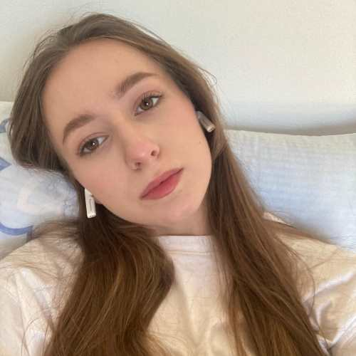
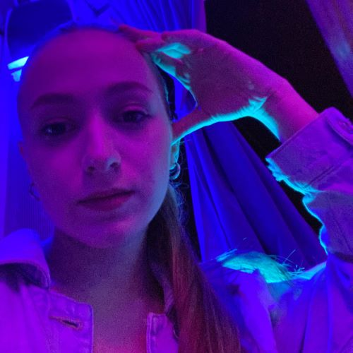

Zovem se Dijana Vukajlović, imam 20 godina i dolazim iz Subotice. Trenutno studiram na Grafičkom fakultetu u Zagrebu. U slobodno vrijeme volim da čitam, crtam i da se družim sa prijateljima. Ovako ja izgledam:
 Ovo je pjesma koju volim da slušam: